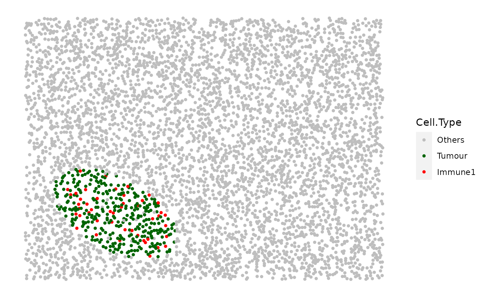

Tissue Image Simulator (TIS)
TIS.RdTissue Image Simulator (TIS) integrates the basic simulation functions in spaSim, including simulating (mixed) background image, clusters, immune rings, double immune rings and stripes. The patterns are simulated on separate layers sequentially (e.g. immune rings are simulated after/on top of background cells). And each layer is also plot sequentially.
Pattern properties (e.g. properties_of_clusters) contain the properties
of a pattern in the format of list where each element is one pattern. These
properties need to be manually defined. Details about the format of the
properties see the examples in simulate_clusters
simulate_immune_rings simulate_double_rings
simulate_stripes
Usage
TIS(
bg_sample = NULL,
n_cells = NULL,
width = NULL,
height = NULL,
min_d = NULL,
oversampling_rate = 1.2,
names_of_bg_cells = NULL,
proportions_of_bg_cells = NULL,
n_clusters = NULL,
properties_of_clusters = NULL,
n_immune_rings = NULL,
properties_of_immune_rings = NULL,
n_double_rings = NULL,
properties_of_double_rings = NULL,
n_stripe_type = NULL,
properties_of_stripes = NULL,
image_name = NULL,
plot_image = FALSE,
plot_categories = NULL,
plot_colours = NULL
)Arguments
- bg_sample
(OPTIONAL) A data.frame or SingleCellExperiment class object with locations of points representing background cells. Further cell types will be simulated based on this background sample. The data.frame or the metadata of the SCE object should have colnames including "Cell.X.Positions" and "Cell.Y.Positions". By default use the internal
bg1background image.- n_cells
(OPTIONAL) Number of background cells to simulate. Only when
bg_sampleis NULL.- width
(OPTIONAL) Number The width of the image.
- height
(OPTIONAL) Number The height of the image.
- min_d
(OPTIONAL) Number The minimum distance between two cells.
- oversampling_rate
(OPTIONAL) Numeric. The multiplier for oversampling. Without oversampling, the simulation deletes cells that are within
min_dfrom each other, resulting in a less total number of cells thann_cells. Default is 1.2 (this should be set based onn_cellsandmin_d; should always be larger than 1).- names_of_bg_cells
(OPTIONAL) Vector The cell types of the background cells. If NULL, the background cells are of one type.
- proportions_of_bg_cells
(OPTIONAL) Vector The corresponding proportion of each cell type in the background cells.
- n_clusters
(OPTIONAL) Number of cell clusters. If NULL, no clusters to simulate.
- properties_of_clusters
(OPTIONAL) List of parameters to define the clusters.
- n_immune_rings
(OPTIONAL) Number of immune rings. If NULL, no immune rings to simulate.
- properties_of_immune_rings
(OPTIONAL) List of parameters to define the immune rings.
- n_double_rings
(OPTIONAL) Number of double immune rings. If NULL, no double rings to simulate.
- properties_of_double_rings
(OPTIONAL) List of parameters to define the double immune rings.
- n_stripe_type
(OPTIONAL) Number of stripe (vessel) types. If NULL, no stripes to simulate.
- properties_of_stripes
(OPTIONAL) List of parameters to define the stripes.
- image_name
(OPTIONAL) String to name the output tissue image.
- plot_image
Boolean. Whether the simulated image is plotted.
- plot_categories
String Vector specifying the order of the cell categories to be plotted. Default is NULL - the cell categories under the "Phenotype" column would be used for plotting.
- plot_colours
String Vector specifying the order of the colours that correspond to the
plot_categoriesarg. Default is NULL - the predefined colour vector would be used for plotting.
Examples
set.seed(610)
double_ring_image <- TIS(bg_sample=bg1, n_clusters=1,
properties_of_clusters=list(C1=list( name_of_cluster_cell="Tumour",
size=300, shape="Oval", centre_loc=data.frame("x"=500, "y"=500),
infiltration_types=c("Immune1", "Others"), infiltration_proportions=c(0.1, 0.05))),
plot_image=TRUE)
